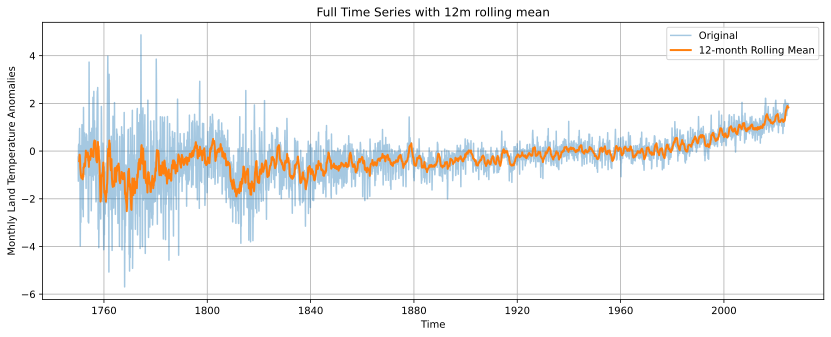
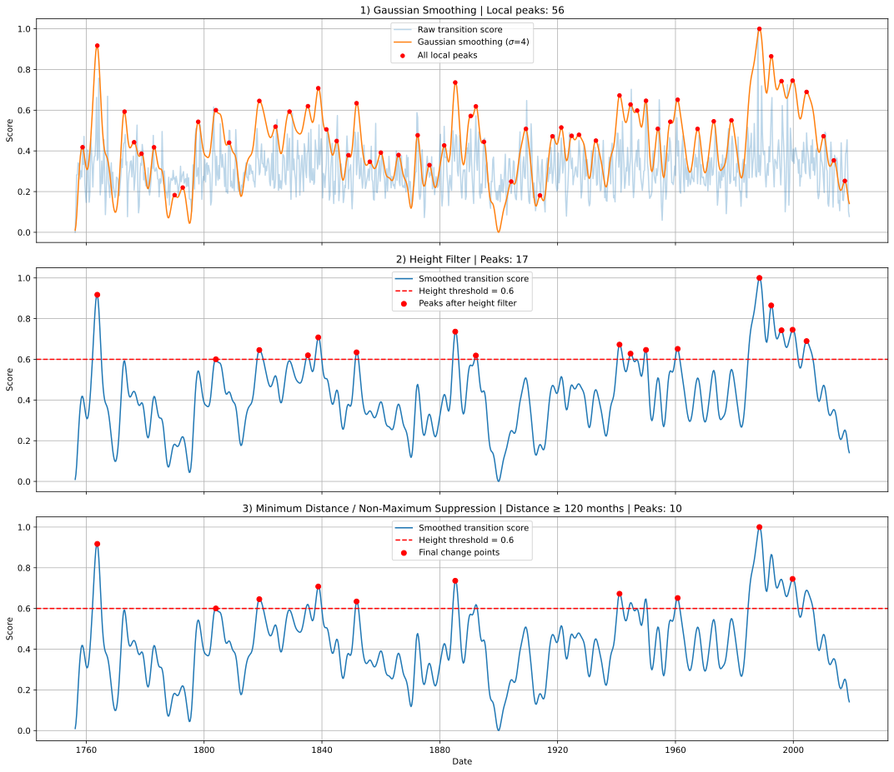
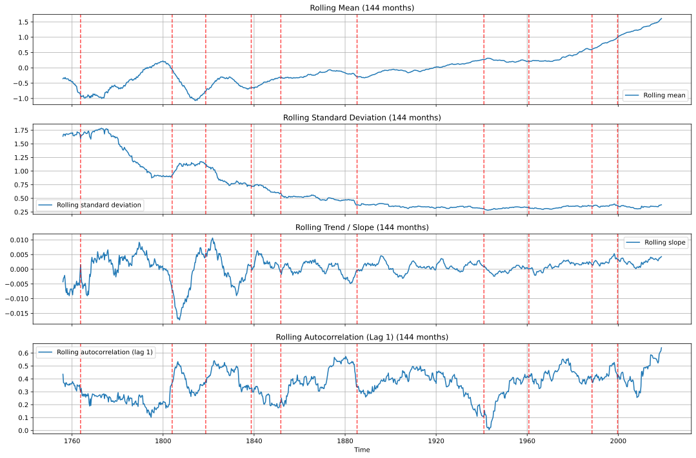
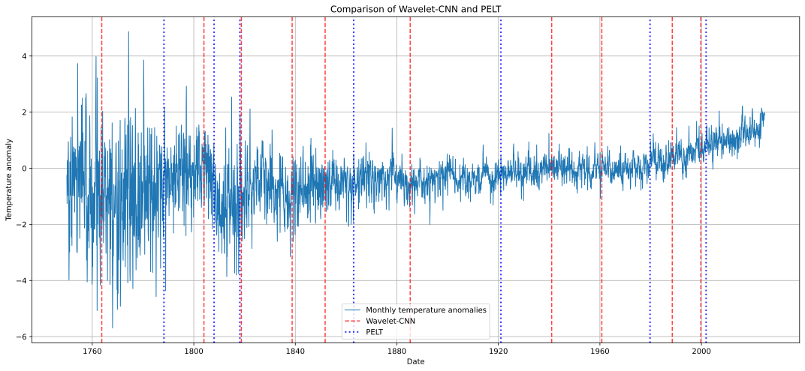
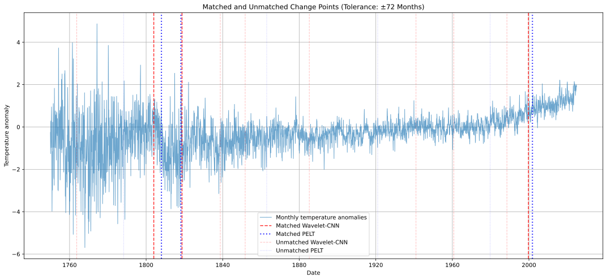

Chapter 8 Deep Learning for Change-Point Detection in Climate Time Series
Author: Maximilian Bur
Supervisor: Helmut Küchenhoff
Degree: Master
8.1 Abstract
Change-point detection aims to identify times at which the statistical properties of a process change. In climate time series, such changes may affect the mean, variance, trend, or temporal dependence. They are often gradual, noisy, and difficult to capture with a single predefined model. This report reviews how deep learning can be combined with statistical postprocessing to detect structural changes in long climate records.
A self-supervised approach is applied to monthly global land temperature anomalies from Berkeley Earth. Overlapping 144-month windows are transformed into wavelet scalograms and mapped to low-dimensional embeddings by a two-dimensional convolutional neural network. The network is trained with a symmetric contrastive objective that encourages adjacent windows to have similar representations. Change-point candidates are then derived from distances between consecutive embeddings through smoothing, thresholding, and non-maximum suppression.
Rolling estimates of the mean, standard deviation, local trend, and autocorrelation provide a descriptive interpretation of the resulting candidates. The candidates are also compared with those obtained from the classical PELT algorithm. Because no verified change-point labels are available, this comparison does not establish which detections are correct. The application illustrates the flexibility of representation-learning-based detection while emphasizing that neural change scores do not provide statistical significance or physical attribution on their own.
8.2 Introduction
Climate change is often summarized as a gradual long-term warming trend. Many climate-related processes, however, also exhibit abrupt or accelerated structural changes, including shifts in variability, trend slope, or temporal dependence. Change-point detection (CPD) provides a statistical framework for asking whether and when such transitions occur (Killick et al. 2012; Truong et al. 2020). In climate statistics, the problem is particularly demanding: series are non-stationary and autocorrelated, early instrumental records can be noisy or sparsely observed, and verified labels for historical regime shifts are typically unavailable.
Classical CPD methods rely on an explicit cost function or likelihood and yield interpretable segmentations under clear model assumptions. Their strength is also their limitation: the practitioner must specify which property is expected to change. Deep-learning approaches take a complementary route. Rather than monitoring a single preselected statistic, they learn feature representations from the data and infer potential changes from those representations (Xu et al. 2025). This is attractive when several statistical properties may change jointly or when a suitable parametric cost is difficult to specify in advance.
Deep CPD should not be misunderstood as a climate-specific methodology in its own right. As emphasized by (Xu et al. 2025), much of the literature concerns representation learning for sequential data, whereas only a smaller part is CPD-specific postprocessing that converts continuous scores into discrete change times. Statistical analysis remains necessary to assess whether a detected pattern is credible and scientifically meaningful.
The primary objective of this report is to summarize and illustrate the framework for deep-learning-based CPD reviewed by (Xu et al. 2025), rather than to develop or comprehensively benchmark a new detection algorithm. To make the reviewed concepts concrete, the report implements a self-supervised pipeline for a univariate climate series, consisting of wavelet preprocessing, a convolutional encoder, contrastive training, and statistical postprocessing. The method is applied to the Berkeley Earth global land temperature anomaly series (Berkeley Earth 2024) and compared with PELT based on an L2 mean-shift cost (Killick et al. 2012). The goal is not to declare a winner between methods, but to examine what each procedure identifies and how their outputs relate.
The remainder of the report is organized as follows. Section 3 formalizes CPD and reviews classical and deep-learning approaches. Section 4 presents the illustrative pipeline and its application. Section 5 compares the neural candidates with PELT. Sections 6 and 7 discuss the findings and conclude.
8.3 Change Point Detection
Change-point detection seeks time points at which the data-generating mechanism of a sequence changes. Unlike outlier detection, which focuses on isolated anomalies, CPD targets persistent transitions that divide a series into regimes. Applications range from finance and manufacturing to medicine and climate science. In climate research, relevant changes include mean shifts, variance changes, trend breaks, and alterations of temporal dependence.
8.3.1 Problem formulation
Consider a univariate series \(X=(x_1,\ldots,x_T)\). A single change point \(\tau\) separates two regimes,
\[ x_1,\ldots,x_\tau \sim P_1, \qquad x_{\tau+1},\ldots,x_T \sim P_2, \]
with \(P_1\neq P_2\). The distributions may differ in their mean, variance, trend, autocorrelation, or full probability law. The estimation target is \(\hat\tau\).
Many classical procedures formulate the problem as cost minimization. Let \(C(a,b)\) measure how well observations from \(a\) to \(b\) fit a single homogeneous model. For one change point,
\[ \hat\tau = \arg\min_{\tau} \bigl[ C(1,\tau)+C(\tau+1,T) \bigr]. \]
When a parametric model is available, an equivalent formulation is segmented maximum likelihood. For a normal mean shift with constant variance,
\[ x_t\sim \begin{cases} \mathcal{N}(\mu_1,\sigma^2), & t\le\tau,\\ \mathcal{N}(\mu_2,\sigma^2), & t>\tau, \end{cases} \]
and \(\hat\tau\) maximizes the corresponding segmented log-likelihood.
For \(K\) change points \(\tau_1<\cdots<\tau_K\), a standard objective is
\[ \min_{\tau_1,\ldots,\tau_K} \left[ \sum_{k=0}^{K} C(\tau_k+1,\tau_{k+1}) + \beta K \right], \]
where \(\tau_0=0\), \(\tau_{K+1}=T\), and \(\beta K\) penalizes overly fine segmentations. Offline methods use the complete series, whereas online methods process observations sequentially and emphasize detection delay. The present analysis is offline and retrospective.
8.3.2 Classical methods: cost functions and PELT
Classical methods do not learn feature representations. Instead, they optimize an explicitly chosen cost that encodes the intended notion of within-segment homogeneity. For changes in the mean, a common choice is the residual sum of squares,
\[ C(a,b) = \sum_{t=a}^{b} \bigl(x_t-\bar x_{a:b}\bigr)^2, \]
where \(\bar x_{a:b}\) is the segment mean. This cost is small when observations within a segment are close to a common level. A favourable change point therefore separates groups with different means. Related cost functions address changes in variance or other parametric families (Truong et al. 2020). The penalty \(\beta\) controls the number of estimated change points: smaller values yield denser segmentations, whereas larger values favour coarser partitions.
An exhaustive search over all possible partitions is computationally expensive. The Pruned Exact Linear Time (PELT) algorithm solves the penalized multiple-change-point problem exactly by combining dynamic programming with a pruning rule (Killick et al. 2012). During the recursion, candidate locations that cannot be optimal for any future solution are discarded. Under suitable conditions, the computational cost is linear in \(T\), making PELT practical for long climate records.
In this report, PELT is applied to a standardized series using an L2 cost, a minimum segment length of 120 months, and the penalty \(\beta=c\log n\) with \(c=3\). These settings were not selected through an extensive tuning procedure. Because the L2 formulation models piecewise-constant segment means, PELT is primarily sensitive to changes in level. It therefore provides an interpretable classical baseline, although changes dominated by variance, trend slope, or temporal dependence need not produce strong detections.
8.3.3 Deep learning methods
Following (Xu et al. 2025), deep CPD replaces hand-crafted statistics with a learned map
\[ f_\theta:\mathcal{X}\to\mathcal{Z}, \qquad z_i=f_\theta(W_i), \]
from an input window \(W_i\) to a latent representation \(z_i\). Rather than organizing the field around a single architecture, the review describes a modular pipeline:
\[ \text{raw data} \rightarrow \text{preprocessing} \rightarrow \text{neural representation} \rightarrow \text{postprocessing}. \]
Deep CPD can therefore be viewed as representation learning followed by statistical detection. The neural network extracts features, and a subsequent procedure converts those features into estimated change times.
Preprocessing. Neural networks usually require inputs of fixed size. Windowing divides a long series into overlapping segments of length \(L\) and step \(s\). Short windows increase temporal resolution but provide less context, whereas long windows capture slower structures at the cost of less precise localization. Transformations such as short-time Fourier transforms or wavelet transforms convert windows into time–frequency images that can be processed by two-dimensional convolutional networks. Denoising and data augmentation may further improve robustness when labelled change points are scarce.
Architectures. (Xu et al. 2025) survey a broad range of sequence models. Convolutional networks extract local patterns and are a natural choice for scalogram inputs. Recurrent models accumulate temporal information through hidden states. Autoencoders learn compressed representations whose latent trajectories or reconstruction errors may indicate regime changes. Transformers use attention to represent longer-range dependencies. Graph neural networks become relevant when observations possess spatial or relational structure, as in climate fields or climate networks. Despite their architectural differences, these models serve a similar role in CPD: they produce features that may help distinguish temporal regimes.
Training paradigms. Supervised CPD uses labelled change times or regime labels and may optimize detection-related objectives directly, but such labels are rare in climate applications. Weak supervision relies on coarse or incomplete annotations. Self-supervised objectives instead construct training signals from the observed data. Contrastive learning is one such approach: temporally adjacent windows are treated as positive pairs and encouraged to have similar embeddings, while other windows in the batch act as negatives. If neighbouring windows generally belong to the same local regime, structural transitions may be associated with increased distances between consecutive embeddings.
From scores to change points. Learned embeddings are not change points by themselves. A time-indexed change score, such as \(s_i=D(z_i,z_{i+1})\), or a predicted change probability must first be constructed. Generic smoothing and normalization reduce score variability. CPD-specific postprocessing then applies height thresholds and non-maximum suppression to prevent a broad transition from being reported as several nearby detections. Consequently, the final candidate set depends not only on the neural representation but also on the postprocessing procedure.
Deep methods are flexible and scale to complex or high-dimensional inputs. However, they tend to be less interpretable, rarely provide classical significance statements, and may be sensitive to design choices (Xu et al. 2025). In low-dimensional settings with a clearly specified type of change, classical methods may remain simpler and more directly justified.
8.4 Deep Learning Approach
To illustrate the reviewed methodology, the implemented pipeline maps a univariate series to change-point candidates through overlapping windows, wavelet scalograms, a shared convolutional encoder, contrastive training, and score postprocessing:
\[ \text{series} \rightarrow \text{windows} \rightarrow \text{scalograms} \rightarrow \text{embeddings} \rightarrow \text{distances} \rightarrow \text{candidates}. \]
8.4.1 Data
Let \(X=(x_1,\ldots,x_T)\) denote monthly global land temperature anomalies from Berkeley Earth (Berkeley Earth 2024). After removing missing observations, the remaining series is standardized globally,
\[ \tilde x_t=\frac{x_t-\bar x}{s_x}. \]
The full historical sample is used for standardization because the analysis is retrospective. The standardized series is divided into windows of length \(L=144\) months (12 years) with step \(\Delta=3\) months,
\[ W_i = \bigl(\tilde x_{t_i},\ldots,\tilde x_{t_i+143}\bigr), \qquad t_i=1+3(i-1). \]
Adjacent windows share 141 observations. Each window is associated with its centre \(c_i=t_i+L/2\).
8.4.2 Wavelet preprocessing
Each window is transformed using a continuous wavelet transform. Only the magnitudes of the complex coefficients are retained. The resulting magnitude matrix is compressed using \(\log(1+\cdot)\) and standardized separately within each window. This produces a scalogram
\[ S_i\in\mathbb{R}^{48\times144}, \]
which serves as a time–scale image for the convolutional encoder. The wavelet transform is used as a representation device rather than as a physically interpreted spectrum.
8.4.3 CNN architecture
A shared two-dimensional CNN maps each scalogram to a unit-norm embedding \(z_i=f_\theta(S_i)\in\mathbb{R}^{32}\). After adding a channel dimension, the input tensor has shape \(1\times48\times144\). Three Conv2D–ReLU–MaxPool2D blocks expand the channel dimension from 1 to 16, 32, and 64. With \(2\times2\) pooling after each convolution, the spatial dimensions are reduced successively from \(48\times144\) to \(24\times72\), \(12\times36\), and \(6\times18\). The flattened representation therefore contains
\[ 64\cdot6\cdot18=6912 \]
features. A two-layer projection head maps these features according to
\[ 6912\rightarrow128\rightarrow32. \]
The final embedding is \(\ell_2\)-normalized, so that inner products correspond to cosine similarities. Both members of each training pair are processed by the same encoder with shared weights.
8.4.4 Contrastive training
No labelled change points are used during training. For each index \(i\), the pair \((S_i,S_{i+1})\) is treated as a positive example. In a mini-batch of \(B=64\) adjacent pairs, normalized embedding matrices \(Z^{(1)},Z^{(2)}\in\mathbb{R}^{B\times32}\) yield the similarity matrix
\[ A=\frac{Z^{(1)}{Z^{(2)}}^\top}{\tau}, \qquad \tau=0.2. \]
The symmetric contrastive loss is
\[ \mathcal{L} = \frac12 \bigl( \mathcal{L}_{1\rightarrow2} + \mathcal{L}_{2\rightarrow1} \bigr), \]
where each direction is a temperature-scaled softmax cross-entropy objective that identifies the matching adjacent embedding among the batch negatives. The model is trained for 100 epochs using Adam with learning rate \(10^{-3}\).
The underlying assumption is that neighbouring windows usually describe similar local regimes. Near a structural transition, the corresponding embeddings may become less similar. Because consecutive windows overlap strongly, the positive-pair task is relatively easy. The encoder should therefore be interpreted as learning a smooth local representation rather than a set of sharply separated regimes.
8.4.5 Postprocessing
After training, embeddings are computed in chronological order. The raw transition score is defined as the cosine distance
\[ s_i^{\mathrm{raw}}=1-z_i^\top z_{i+1}, \]
and normalized to \([0,1]\). A Gaussian filter with \(\sigma=4\) is then applied to smooth the score, followed by a second normalization. Discrete candidates are obtained by
- collecting local maxima,
- retaining peaks with height at least \(0.6\),
- enforcing a minimum separation of 120 months through non-maximum suppression.
These settings were chosen empirically to suppress minor score fluctuations and produce a manageable set of candidates; they were not optimized against labelled change points. The procedure yields 56 local maxima after smoothing, 17 peaks after thresholding, and ten final candidates. The reported dates should be interpreted as approximate centres of structural transitions rather than exact monthly break locations.
8.4.6 Application to Berkeley Earth Temperature Data
The Berkeley Earth data contain monthly global land temperature anomalies from 1750 onward (Berkeley Earth 2024). Because anomalies are defined relative to a reference climatology, the seasonal cycle has already been removed and no additional seasonal adjustment is applied. Exploratory analysis indicates a long-run increase in the mean, substantially greater variability in the early part of the record, and pronounced temporal dependence. Early observations are particularly unstable and may reflect changes in measurement quality or data coverage in addition to climate variability.

FIGURE 8.1: Berkeley Earth monthly land temperature anomalies (1753–2023). The blue curve shows the monthly anomaly series, while the orange curve represents a 12-month rolling mean that emphasizes lower-frequency variation. The early part of the record displays substantially greater variability, whereas the late twentieth and early twenty-first centuries are characterized by a pronounced increase in the anomaly level.

FIGURE 8.2: Postprocessing of the raw Wavelet–CNN transition score. Gaussian smoothing with \(\sigma=4\) suppresses short-scale fluctuations while retaining broad maxima (top). Applying a minimum height of 0.6 removes weaker peaks (middle). Non-maximum suppression with a minimum temporal separation of 120 months then reduces clusters of nearby peaks to ten final change-point candidates (bottom).
The ten final candidates and their normalized scores are reported in Table 8.1.
| Year | Score |
|---|---|
| 1763 | 0.917 |
| 1804 | 0.600 |
| 1818 | 0.646 |
| 1838 | 0.708 |
| 1851 | 0.634 |
| 1885 | 0.736 |
| 1941 | 0.672 |
| 1960 | 0.651 |
| 1988 | 1.000 |
| 1999 | 0.745 |
The largest normalized score occurs in 1988, while comparatively strong peaks also occur in 1763, 1999, and 1885. These values are relative to the trained representation and the normalization performed over the full score series. They should not be interpreted as probabilities or significance levels.
Because verified labels are unavailable, the candidates are interpreted descriptively using the rolling mean, rolling standard deviation, local linear slope, and lag-one autocorrelation. All four statistics are computed using the same 144-month window length as the encoder.

FIGURE 8.3: Rolling statistical summaries of the temperature anomaly series. From top to bottom, the panels show the 144-month rolling mean, rolling standard deviation, rolling linear trend, and lag-1 autocorrelation. Red dashed lines mark the final Wavelet–CNN candidates. The candidate dates coincide with different combinations of changes in level, variability, trend, and temporal dependence, rather than with a single common statistical feature.
The candidates do not align uniformly with any single rolling statistic.
- 1763 falls within a period of high early-record variability and a changing local level. Although its score is large, the observational instability of the early instrumental period warrants a cautious interpretation.
- 1804 coincides with a reversal in the local trend. The rolling mean approaches a local maximum, after which the estimated slope becomes strongly negative.
- 1818, 1838, and 1851 occur during a prolonged decline in rolling variability accompanied by changes in local trend and dependence. Their distribution over several decades is consistent with stages of an extended transition rather than isolated mean jumps.
- 1885 and 1941 are associated more clearly with changes in local trend and autocorrelation than with abrupt shifts in the rolling mean. This is consistent with the learned representation responding to aspects of temporal structure beyond the mean level alone.
- 1960 has no comparably pronounced counterpart in the displayed rolling summaries. The candidate may therefore reflect either a weaker combination of features or characteristics not captured by these four descriptive statistics.
- 1988 produces the strongest normalized score and lies near a period in which the rolling mean begins to rise persistently. 1999 occurs within the same broader modern warming phase. Although the ten-year minimum-distance rule permits both candidates to remain, they may represent different parts of one extended transition.
Taken together, the results are consistent with sensitivity to several forms of structural variation. Nevertheless, an elevated embedding distance does not identify which statistical property has changed. Linking individual candidates to physical climate mechanisms, changes in data coverage, or measurement artefacts would require additional scientific analysis and lies outside the scope of this report.
8.5 Comparison of Changepoint Candidates with PELT
Using an L2 cost, a minimum segment length of 120 months, and penalty multiplier \(c=3\), PELT detects seven change points in 1788, 1808, 1818, 1863, 1921, 1979, and 2001.

FIGURE 8.4: Change-point candidates identified by the Wavelet–CNN and PELT procedures. Red dashed lines mark Wavelet–CNN candidates, while blue dotted lines mark PELT estimates. Several detections occur in similar periods, whereas others are specific to one procedure, reflecting differences in temporal resolution, model assumptions, and tuning choices.
To compare candidate locations, an optimal one-to-one matching is computed with the Hungarian algorithm using a tolerance of 72 months, corresponding to half the CNN window length. Three pairs fall within this tolerance (Table 8.2).
| CNN year | PELT year | Difference (months) |
|---|---|---|
| 1804 | 1808 | 48 |
| 1818 | 1818 | 7 |
| 1999 | 2001 | 25 |
The remaining CNN candidates, including the strongest peak in 1988, and the remaining PELT dates in 1788, 1863, 1921, and 1979 are unmatched under the selected tolerance.

FIGURE 8.5: Matched and unmatched change-point candidates from the Wavelet–CNN and PELT procedures using a temporal tolerance of \(\pm72\) months. Dark red and dark blue lines denote detections assigned to matched pairs, whereas lighter lines indicate candidates identified by only one procedure. The partial overlap highlights transitions that are salient under both approaches while also showing substantial method-specific variation.
These results should not be interpreted as a ranking of correctness. No labelled change points are available for the series, and no statistical hypothesis test of agreement is performed. The matching procedure evaluates only temporal proximity between the two candidate sets.
The partial overlap is nevertheless informative. Agreement near 1804/1808, 1818, and 1999/2001 indicates that some transitions are salient under both a mean-oriented cost and a learned time–frequency representation. Differences elsewhere are expected for at least three reasons. First, PELT with an L2 cost models piecewise-constant changes in the mean, whereas the Wavelet–CNN score may also respond to changes in variance, trend, or dependence. Second, the CNN assigns each score to the centre of a twelve-year window and subsequently smooths the score, giving it a coarser temporal resolution than monthly PELT estimates. Third, both procedures depend on design choices, including the PELT penalty multiplier and the CNN height threshold and minimum-distance constraint.
A limited penalty-sensitivity analysis for PELT shows that the number of detections varies with \(c\), although several locations remain relatively stable across neighbouring penalty values. The CNN candidate set likewise depends on the score threshold and minimum temporal separation. In the absence of labels, these analyses describe stability under alternative design choices rather than validation against a known truth. Both outputs are therefore best regarded as candidate lists for further statistical and scientific inspection, not as definitive segmentations of the climate record.
8.6 Discussion
The application illustrates both the appeal and the limitations of deep CPD in climate statistics. A self-supervised Wavelet–CNN can generate candidate dates without labelled regime shifts, and several neural peaks coincide with visible changes in the rolling mean, standard deviation, slope, or autocorrelation. These observations are consistent with the representation-learning perspective discussed by (Xu et al. 2025): once local temporal structure is encoded flexibly, different types of transitions can contribute to a common change score.
At the same time, neural change scores are relative quantities. Their values depend on the window length, wavelet settings, architecture, contrastive temperature, and postprocessing parameters, none of which were tuned extensively. Altering the score threshold or minimum-distance constraint would change the reported candidate set. The method is also entirely offline: because the encoder is trained using the full series, it cannot be interpreted as an online early-warning system. Most importantly, detection is not attribution. Determining whether a candidate reflects climate dynamics, observational artefacts, or preprocessing effects requires scientific evidence beyond the models considered here.
Relative to classical segmentation, unsupervised deep CPD is best regarded as a candidate-generation tool. PELT provides a transparent mean-shift baseline with a clearly defined optimization criterion and an exact search algorithm (Killick et al. 2012). The neural pipeline permits a broader, learned notion of local structural difference, but offers weaker interpretability and no built-in significance test. Used together, the procedures provide complementary views of structural instability in the same record. When the scientific question concerns a specific change in mean level, PELT may be sufficient. When several properties may change jointly or an appropriate cost is difficult to specify, a learned representation may identify additional periods for subsequent statistical and scientific scrutiny.
8.7 Conclusion
This report reviewed deep-learning approaches to change-point detection following (Xu et al. 2025) and illustrated the reviewed framework through a self-supervised Wavelet–CNN application to Berkeley Earth monthly land temperature anomalies (Berkeley Earth 2024). Ten candidates derived from contrastive embedding distances were compared with seven PELT change points based on an L2 cost (Killick et al. 2012). Three pairs were matched within a tolerance of 72 months. Given the absence of ground-truth labels, this partial overlap represents differences and similarities between the procedures’ inductive assumptions rather than evidence that one method is more accurate.
The application supports the modular view of deep CPD emphasized by (Xu et al. 2025): neural networks learn representations of local temporal structure, whereas CPD-specific scoring and postprocessing convert those representations into candidate change times. Deep learning can thereby complement classical statistical procedures, particularly when several properties of a process may change simultaneously. It does not replace statistical modelling, validation, or physical interpretation. Future work could assess robustness more systematically, extend the approach to multivariate or spatially resolved climate fields, and combine detected candidates with substantive knowledge of the underlying climate processes.